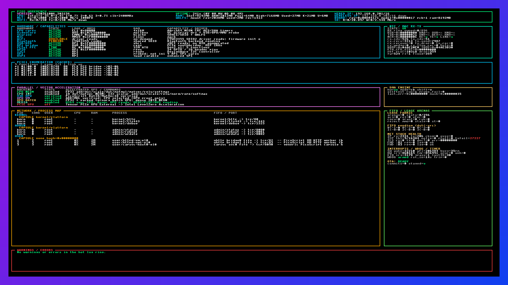

Raspberry Pi 5
8 GB · quad-core Cortex-A76
BCM2712 PCIe1 · Gen2 x1
Running live on Raspberry Pi 5
A deterministic microkernel with its own network stack, storage, TLS, process runtime, PicoScript VM and accelerator paths. No Linux. No libc. No hidden scheduler.

Live framebuffer · Pi 5 · 1920×1080 · kernel-owned telemetry
Hardware fabric
PIOS has proven a complete switch hierarchy from the BCM2712 PCIe1 root, through a Broadcom/PLX PEX8748, to three Intel Arc Pro B50 GPUs.
8 GB · quad-core Cortex-A76
BCM2712 PCIe1 · Gen2 x1
Broadcom / PLX PCIe Gen3
4 × downstream x8
Evidence, not aspiration. Twenty PCIe functions across fifteen buses were enumerated,
BAR0 was sized and mapped, and an Intel Xe2 GMD_ID register was read repeatedly through
the full bridge chain with Bus Master disabled and AER clear.
System architecture
PIOS assigns each core a fixed role and moves work through bounded, generation-checked ownership domains.
Network, disk, console and IRQ-driven services. Never blocks.
Preemptive scheduler and FIFO doorbell processing.
Preemptive EL0 processes with isolated memory.
Application scheduler and capsule workloads.
Hardware IRQs trigger bounded records. Software priority levels execute the work.
SPSC FIFO lanes, explicit publication barriers and sequence-backed wakes.
BARs, DMA spans, processes and storage use generation-backed authority.
TCP/IP, TLS 1.3, WALFS, PicoScript and the web stack run without an underlying OS.
NEON, VideoCore QPU, Kepler and Intel Xe2 paths with deterministic fallbacks.
HDMI, UART, TCP and HTTP expose the same bounded operator surface.
Platform matrix
Hardware capabilities vary; kernel invariants do not.
| Target | Architecture | Boot | Networking | Status |
|---|---|---|---|---|
| Raspberry Pi 5 | AArch64 / Cortex-A76 | Stage0 → verified A/B stage2 | GEM + CYW43455 | Live hardware |
| Pi 3 / Zero 2 W | AArch64 / Cortex-A53 | Board-specific stage2 | Native SDIO Wi-Fi | Supported |
| QEMU virt | AArch64 | Direct + stage0 chain | virtio-net | 32/32 smoke |
| Hyper-V | x86_64 | UEFI → PIOS handoff | VMBus / netvsc | Active bring-up |
| Ivy Bridge Xeon | x86_64 | Native UEFI USB | Native PCIe | Boot services |
Documentation
The repository documents current contracts, decisions, evidence and failed experiments.
Cores, schedulers, IRQs, FIFOs, EL levels and isolation.
Open guide → 02Pi hardware, QEMU, PCIe evidence and target differences.
Open guide → 03NIC backends, ingress validation, TCP, TLS and capsules.
Open guide → 04A/B updates, WALFS, keystore and recovery behaviour.
Open guide → 05Every significant architectural choice and its owner.
Open log → 06Failed probes, reversals and the traps worth remembering.
Open guide →What comes next
Enumeration and Intel MMIO are proven. The next acceptance boundary is useful, contained work—not a green status flag.
Track the work on GitHub